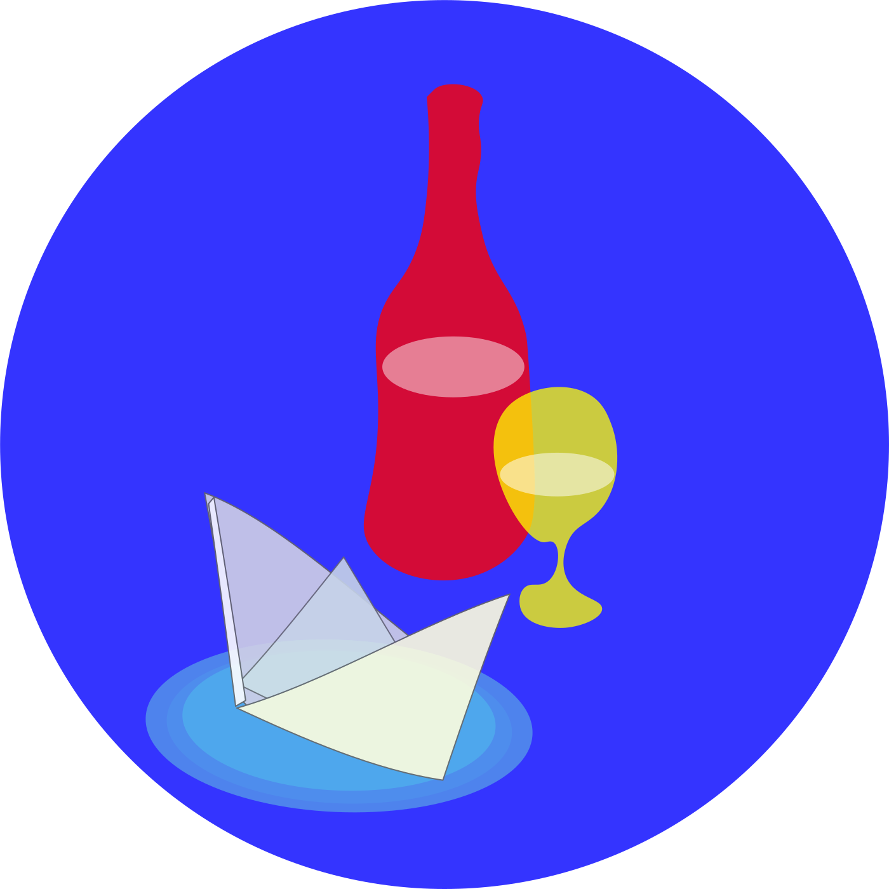

Essai
Un cours « essai » 1 heure 3 vins 35€Le cours d’essai propose aux participants de s’initier à la dégustation durant une heure, avec une approche ouverte et libre sur la dégustation. Nous avons à coeur que les débutants commencent par s’exprimer avec leurs mots et leurs sensations, tout en étant guidé par le formateur ou la formatrice. Ce cours est aussi l’occasion de définir ensemble le lexique de base sur le vin et la dégustation.
Les thèmes abordés
- lexique de base sur le vin : « cépages », « vin », « dégustation ».
- initiation à la dégustation.
- encouragement à donner votre avis et à exprimer vos goûts simplement
- 2/3 vins dégustés
- Tarif : 35 €
